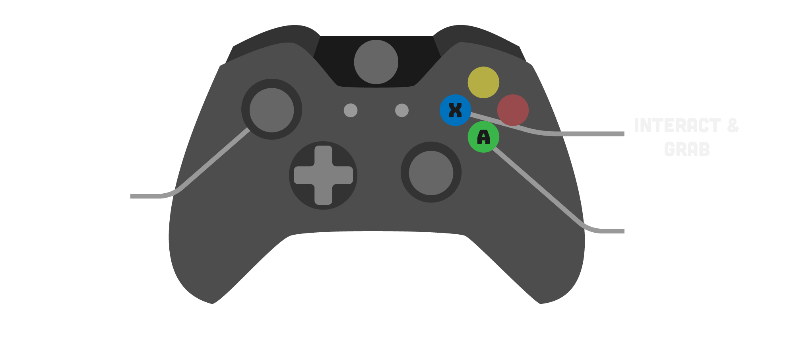
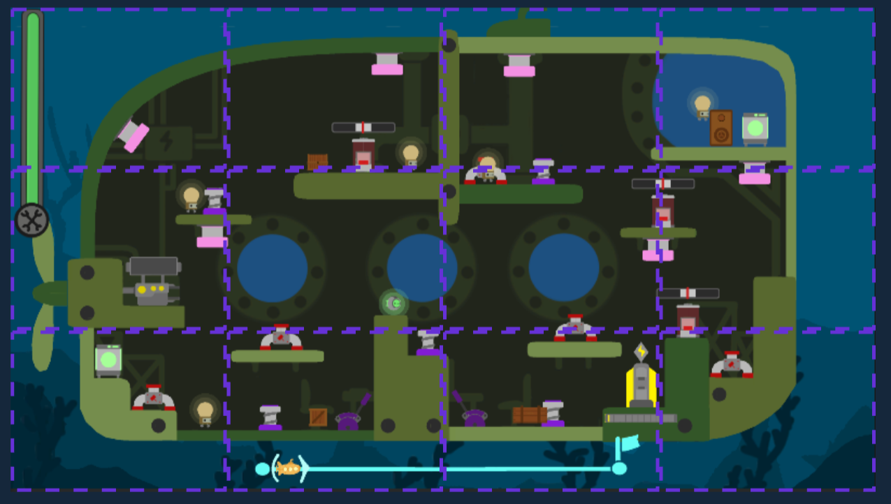

unity · c# · co-op
Deep Dive Repair
Gameplay Programmer · Game Designer
Play co-op as two little robots tasked with rescuing submarines in distress.
Complete a series of small tasks to repair the submarine's various problems, all while keeping its engine running so it can reach a safe harbour.
Use the objects at your disposal… and even your partner ! Throw each other around to move through the submarine more easily and overcome obstacles.
My work: Character controller
Local co-op was a deliberate design choice: sharing the same screen turns coordination into something physical and immediate. Even movement is cooperative — players can throw one another across the submarine, so each robot is both a teammate and a tool.
On the programming side, I built the character controller: the input layer driving two local players, and the custom physics behind everything the robots do — moving, jumping, and throwing. The goal was a controller that felt responsive and predictable, while staying robust enough for a couch session where controllers get unplugged and plugged back in.

Input · New Input System
Two players, hot-pluggable controllers
The controller is built on Unity's New Input System, with a dedicated action map per player so both robots can be driven independently on the same machine.
- Clean separation between input and gameplay logic through action maps and callbacks
- Each player is paired to a specific device, avoiding any input mix-up between the two robots
- Controller reconnection: a pad unplugged mid-game is detected and re-paired to the same player, so a disconnection never breaks the run
Physics · Jump
A jump that feels right
Rather than relying on Unity's default rigidbody behaviour, the jump is driven by hand-tuned physics to get a precise, satisfying arc.
- Controlled rise and fall, tuned by hand for good game feel
- Apex and landing weighted so the jump reads clearly and stays easy to aim
- Consistent height regardless of frame rate thanks to fixed-step physics
Physics · Throw
Throwing your partner
A key co-op mechanic: a player can grab and throw the other robot (or objects) across the submarine. The throw is fully physics-driven so the trajectory stays readable and repeatable.
- Launch direction and force derived from aim and charge for predictable arcs
- Thrown body handed back to the physics simulation cleanly, with the right velocity
- Tuned to be useful for traversal without feeling floaty or random
Physics · Gravity
Custom gravity
Each character runs on a custom gravity model instead of Unity's global gravity, giving full control over how the robots fall and how weighty they feel.
- Per-character gravity tuned independently from the rest of the physics world
- Stronger fall gravity for a snappier, less floaty descent
- Single shared knob to balance jump, throw, and fall together as one coherent feel
My work: The Task system
The tasks are the core of the gameplay and therefore held a central place in the game's production. They are the player's only means of action, serving both as a progression mechanic and as a survival system.
Their design had to meet several requirements: be quick to understand, play out smoothly, and allow a natural flow in order to maintain a good gameplay pace. Designing each task required particular attention, as it directly shapes player engagement and the overall balance of the experience.
We wanted a repetitive activity that never became boring. Each task therefore had to take the player a little time — never an instant completion — in order to play against the overall match timer that slowly ticks away. We ended up with 6 different tasks.
The tasks in detail

Task · Press
Hammer the button
On reaching the task, the player must repeatedly press the X button to complete it.
- Mechanic that's easy to reproduce
- Introduces a rhythm-and-speed challenge tied to the number of presses required

Task · Duo
Two-player sync
This task requires both players to be present at the same time. To complete it, they must press the indicated button simultaneously.
- The most complex task mechanic to pull off
- Relies on coordination and communication between players
- Offers a significant reward on success

Task · Screwdriver
Screw with the joystick
The player must perform a rotating motion with the joystick to simulate the act of screwing.
- Intuitive mechanic that's easy to pick up
- Introduces a speed challenge based on how fast the motion is performed

Task · Timing
Hit at the right moment
The player must press the button at the exact moment a visual or audio cue indicates, in order to complete the task.
- Simple mechanic that's easy to reproduce
- Introduces a skill dimension based on timing precision

Task · Battery
Aim and recharge
The player must throw a battery and aim correctly to recharge the submarine's power system.
- Mechanic that's easy to reproduce
- Introduces a precision challenge through aiming
- Punishing failure: a significant loss if the throw misses

Task · 6
Take aim
The player must throw a nearby object and aim correctly at the pipe to free the submarine crew in danger.
- Mechanic that's easy to reproduce
- Introduces a sense of urgency to the tasks
Managing task spawning
To keep the gameplay flowing, tasks disappear once completed. The real challenge lay in their respawn.
To push players to keep moving, we limited the number of tasks on screen and handled spawning based on the players' positions. The level was split into zones, so we always knew where the players were — and, above all, where they weren't.
Zone boundaries. Each task is assigned a specific zone, determined by a calculation based on its on-screen position.
Player detection. The system continuously analyses which zone the player is not in.
Targeted spawn. A new task appears in a free spot, forcing the player to move in order to reach it.
Twofold pressure. The physical pressure of constant movement, and the mental pressure of the submarine's health gauge slowly creeping toward zero.

Want to play it ?
Playable build, itch.io page or source code — add your links here.